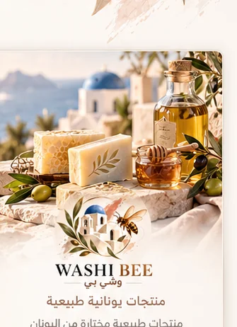

منتجات طبيعية يونانية
هوية مستوحاة من الطبيعة اليونانية.
منتجات يونانية طبيعية مختارة تشمل مجموعات العناية والصابون والعطور. نعرض هنا هوية العلامة، وتُراجع التفاصيل التجارية لكل منتج قبل نشرها.
متجر وشي بي على سلة
هوية مستوحاة من الطبيعة اليونانية.
منتجات تُدرج بمواصفاتها الأصلية المعتمدة فقط.
تفاصيل وصور المنتجات تُستكمل من مستودع العلامة.
جميع عروض البكيجات والهدايا عبر رابط واحد في متجر وشي بي على سلة.